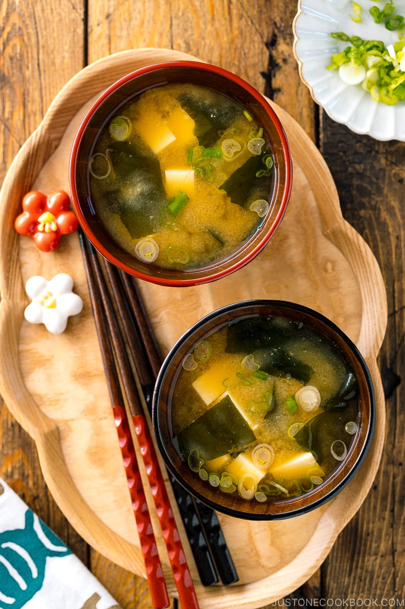
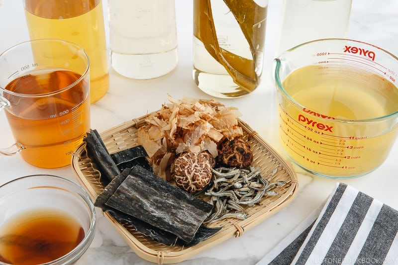
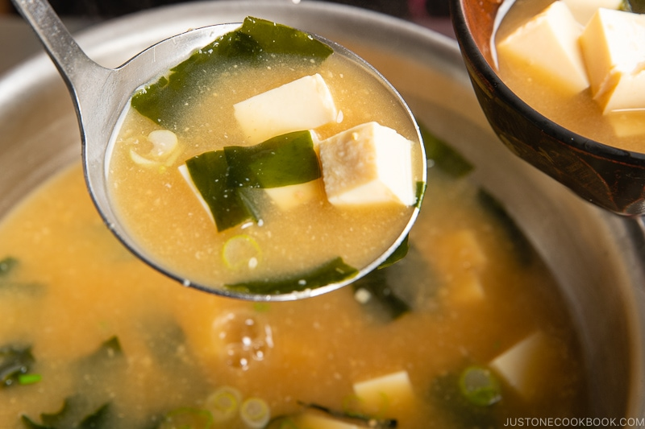

This miso soup is full of savory flavors. Add more dashi to your soup if you want a stronger stock. You can use yellow, white, or red miso paste for this soup — yellow miso is sweet and creamy, red miso is stronger and saltier.
Did you know you can make restaurant-worthy miso soup in the comfort of your own home? Well, you can! You just need a good recipe — and that's where we come in. This miso soup recipe is bold, flavorful, and easy to make with just five ingredients.
Miso soup is a traditional Japanese soup that starts with a dashi stock and is flavored with miso paste. Dashi is an umami-rich stock made from dried seaweed and dried fish. Miso paste, meanwhile, is a paste made from soybeans, salt, and koji rice.
The brothy soup usually contains tofu and green onions. It can also feature seaweed, mushrooms, daikon, and more.
Miso soup is traditionally served with rice.
You'll find a detailed ingredient list and step-by-step instructions in the recipe below, but let's go over the basics:
These are the basic, easy-to-find ingredients you'll need to make this top-rated miso soup recipe:
Miso paste comes in red, white, and yellow varieties. The type you use for soup is up to you and your preferences, but restaurants usually use red miso because it has the deepest flavor.
Here's a brief overview of what you can expect when you make classic miso soup at home:
Allow the miso soup to cool to room temperature, then transfer it to an airtight container. Store in the refrigerator for up to three days. Reheat in the microwave or on the stove.
Yes! Miso soup freezes well. Transfer the cooled soup to zip-top bags or ice trays, then freeze for up to two months. If you use freezer bags, make sure you leave about an inch of room at the top to allow for expansion.
We recommend adding the tofu and green onions after you thaw the soup.
"Easy to make and tasty," according to Brownie5. "Made it for my husband when he wasn't feeling well. Wanted to give him something else instead of the chicken noodle soup he's been drinking. The tofu is a good source of protein to fill his stomach."
"I was looking to replicate the taste of restaurant miso soup at home," says Earnest Cavalli. "This does the job perfectly. That said, I prefer firm tofu to silky, but that's a personal taste thing. Either works great in this recipe."
"I've made this several times now and always make a huge batch to freeze," according to lnos. "Made it exactly with the addition of seaweed. Love this!!"